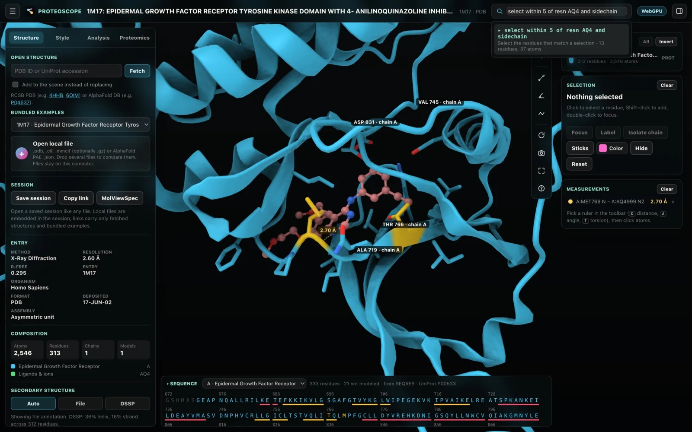

Selections and commands
The search box finds residues and atoms, and it is also a command line. This page covers the selection language and every command.
The search box is a command line
Press / to jump to the search box in the top bar.
- Type a selection and Proteoscope previews the match live, for example "22 residues, 108 atoms". Press Enter to select and frame it.
- Type a command and press Enter to run it.
- ↑ and ↓ recall earlier commands, and Tab completes a command name.
- The help dialog (?, or the
helpcommand) lists the syntax of each command.

Examples
| Type | Result |
|---|---|
chain A and resi 40-80 | Selects residues 40–80 of chain A. |
within 5 of resn STI | Everything within 5 Å of imatinib. |
show sticks byres (within 4.5 of ligand) and protein | Side-chain sticks around every ligand, on the cartoon. |
color magenta /A:315 | Colors residue 315 of chain A. |
hide water | Hides the solvent. |
hide chain B | Hides a chain. |
show everything | Shows everything again. |
distance /A:769@N to :AQ4@N2 | The hinge hydrogen bond to erlotinib in 1M17 (2.70 Å). |
superpose 1AKE onto 4AKE fit /A:1-29+60-121+160-214 | Fits on the adenylate kinase CORE domain. |
select deviation > 5 | Residues that moved more than 5 Å after superposing. |
focus resn HEM and chain A | Focuses a ligand. |
label sele | Labels the selection. |
zoom #2 | Frames a structure. |
tmalign 1A5R onto 1UBQ | Superposes SUMO-1 on ubiquitin by structure alone. |
map load, map level 1.2, map fit | Loads the density map, contours it at 1.2σ, and fits the model. |
Selection language
Selections use PyMOL-style keywords with ChimeraX-style atom specs. Type one on its own in the search box, or use it in any command that takes a selection.
Identifiers
| Keyword | Example | Matches |
|---|---|---|
| chain | chain A+B | Chains A and B. |
| resi | resi 40-80+100A | Residue numbers, in author numbering with insertion codes. |
| resn | resn STI | Residue names. |
| name | name CA | Atom names. |
| elem | elem FE | Elements. |
| uniprot | uniprot 175 | Residues in UniProt numbering. |
| ss | ss helix | Secondary structure: helix, sheet, turn or coil (DSSP letters such as h and e work too). |
| entity | entity 1 | Entity IDs of the structure file. |
| model | model 1 | Models of an ensemble. |
| id, serial | id 1234 | Atom serial numbers. |
| #, structure | #2, structure 1AKE | A structure in the scene. |
Identifiers accept * wildcards.
Atom specs
Atom specs name chains, residues and atoms in one compact form:
/A:40-80@CA,CB: chain A, residues 40 to 80, atoms CA and CB;/A:315: residue 315 of chain A;:HEMor:AQ4@N2: a residue by name, or one of its atoms;#2/B: chain B of structure 2.
Classes
protein, nucleic, polymer, ligand, ion, metal, water, hetatm, hydrogen, backbone, sidechain, helix, sheet, turn and coil, and all and none.
Logic and neighborhoods
- Logic:
and,or,notand parentheses. Words next to each other mean "and", sochain A ligandis the same aschain A and ligand. - Neighborhoods:
within 5 of Xis everything within 5 Å of X;around 5 of Xis the same but excludes X;beyond 10 of Xis everything farther than 10 Å from X. - Expansion:
byres Xandbychain Xexpand X to whole residues or whole chains.
Distances reach across structures, so within 5 of (#1 and ligand) finds residues of a superposed structure near another structure's ligand.
Values
Select by a number with a comparison, as in these examples:
| Example | Value |
|---|---|
b > 60 | B-factor. |
q < 1 | Occupancy. |
plddt < 70 | AlphaFold confidence (pLDDT). |
deviation > 2 | Cα distance to the aligned residue after superposition, in Å. |
lddt < 0.7 | Local agreement (lDDT) with the compared structure. |
rmsf > 2 | RMSF across overlaid models. |
rsa > 0.4 | Relative solvent accessibility, after Compute SASA. |
ppse < 6 | Part-sphere exposure (pPSE). |
am > 0.564 | AlphaMissense pathogenicity. |
msa < 30 | MSA depth. |
rsrz > 2, rscc < 0.8, qscore < 0.4 | Fit to density, from the wwPDB validation report. |
conservation > 0.6, grade >= 8 | Conservation score and grade. |
mapfit < 1 | Fit to a loaded density map. |
Named sets
| Set | Contains |
|---|---|
sele | The current selection. |
focus | The focused residue or ligand. |
sites | Proteomics sites. |
covered | Residues covered by peptides. |
aligned | Residues paired in a comparison. |
outliers | Outliers from the validation report. |
idr | Disordered regions, after the pPSE analysis. |
Command reference
Every command, grouped by what it does. In the syntax, <…> is a value you fill in, […] is optional, and | separates alternatives. Where a command has other names, they are listed after its description; they work the same way.
Selecting and framing
| Command | Syntax | What it does |
|---|---|---|
| select | select <selection> | Selects the residues that match a selection. Also sele, sel. |
| zoom | zoom [<selection>] | Frames the selection, or everything. Also view, frame. |
| orient | orient [<selection>] | Frames along the principal axes of the selection. |
| focus | focus <selection> | Focuses residues or a ligand: side chains within 5 Å and interactions. |
| label | label [<selection>] | Labels residues (the selection by default). |
| unlabel | unlabel [<selection>] | Removes labels. |
Styling
| Command | Syntax | What it does |
|---|---|---|
| show | show <sticks| | Shows a representation, for a selection or everywhere. show everything shows everything again. |
| hide | hide [<representation>| | Hides residues or a representation, for example hide water or hide chain B. |
| color | color <color| | Colors a selection with a name (red, slate, …) or a hex value (#ff8800), applies a scheme (chain, plddt, deviation, …), or returns to the default colors. Schemes apply to whole structures, so use them without a selection. Also colour. |
| preset | preset <cartoon| | Applies a representation preset. Also style, rep. |
| lighting | lighting <standard| | Applies a lighting preset. See Lighting and effects. Also light. |
| bg | bg <dark| | Sets the background. Also background. |
Opening and managing structures
| Command | Syntax | What it does |
|---|---|---|
| fetch | fetch <PDB ID| | Fetches a structure, replacing the scene. Also open, load. |
| add | add <PDB ID| | Fetches a structure and adds it to the scene. |
| search | search <gene| | Finds structures and models in RCSB PDB, UniProt, PDBe and 3D-Beacons. See Finding structures. Also lookup, discover. |
| example | example [add] [<id>] | Opens a bundled example with its opening view. With add, adds it next to the open structures, without the view. With no ID, lists them. Also examples, sample, demo. |
| list | list | Lists the structures in the scene. Also structures, ls. |
| info | info | Describes the active structure: source, method and resolution or confidence, chains, ligands and scores. Also describe, about. |
| activate | activate <structure> | Makes a structure the active one. Also use. |
| remove | remove <structure> | Removes a structure from the scene. Also delete, close. |
| refresh | refresh | Downloads the active structure again, bypassing the cache. Also reload. |
| assembly | assembly [<id>| | Builds a biological assembly of the active structure (au: the asymmetric unit), or lists them. Also assemblies, biounit. |
Comparing structures and predictions
| Command | Syntax | What it does |
|---|---|---|
| superpose | superpose <moving| | Superposes structures and reports RMSD, TM-score and lDDT. fit sets the residues to fit on. See Comparing structures. Also super, align, matchmaker, mm. |
| tmalign | tmalign <moving| | Superposes by structure alone (TM-align; MM-align for complexes), for remote homologs and different complexes. Also usalign, structalign, tm-align. |
| alphafold | alphafold | Compares the active structure with its AlphaFold DB model. Also af. |
| overlay | overlay [on| | Overlays all models of an ensemble. |
| ranking | ranking [<rank>] | Lists the models of an opened prediction, or shows the one at a rank. See Predictions and AlphaFold. Also models, predictions. |
| triage | triage [by <metric>] [top <n>] [jobs|triage show <n>triage gallery [<n>]triage export | Ranks every opened prediction job by ipSAE, pDockQ2, pDockQ, LIS, ipTM, pTM, the tool's score, pLDDT or cross-links; shows a row, renders a gallery of the best, or exports the table. See Batch triage. Also batch, campaign. |
| domains | domains | Finds rigid domains in the PAE matrix and colors by them. Also paedomains. |
| msa | msa | Colors by MSA depth (AlphaFold DB models, prediction folders, dropped .a3m files). |
Validation, maps and docking
| Command | Syntax | What it does |
|---|---|---|
| validate | validate [clashes| | Loads the wwPDB validation report and colors outliers, shows clashes or density fit. See Validation and density maps. Also validation, report. |
| map | map [load|map peaks [<σ>]map level <σ> [2fofc|map style mesh|map region focus|map radius <Å>map zone <Å>| | Loads the X-ray or cryo-EM map of a PDB entry, contours it, fits the model to it, or lists the peaks of the difference map (see Difference-map peaks). Also density, volume. |
| pose | pose [<n>| | Shows a docking pose (opened from SDF, MOL2 or PDBQT), computes interaction fingerprints, or removes the poses. See Ligands and docking. Also poses, docking. |
Analysis and proteomics
| Command | Syntax | What it does |
|---|---|---|
| compound | compound [<selection>] | Shows the ligand card: names, formula, weight, SMILES, InChIKey and database links. See The ligand card. Also chem, component, ccd. |
| diagram | diagram [<selection>] [names] | Draws a 2D diagram of a ligand and its interactions, for figures; names adds atom names. See 2D interaction diagrams. Also ligplot, poseview. |
| interactions | interactions <selection> | Focuses residues or a ligand and lists their interactions with PLIP's criteria. Also plip. |
| interface | interface <chain> <chain> | Lists the contacts between two chains and frames their interface. Also contacts. |
| conservation | conservation [jsd| | Colors by conservation from the prediction's MSA, AlphaFold DB's, or a dropped alignment (Jensen–Shannon divergence, ConSurf-style grades). Also consurf, conserved. |
| missense | missense [<UniProt accession>] | Colors by AlphaMissense pathogenicity (human proteins). Also alphamissense, am. |
| exposure | exposure | Computes part-sphere exposure (pPSE) and disorder as in StructureMap, and colors by pPSE. Also ppse, structuremap. |
| evidence | evidence | Loads public peptides and PTM sites (EBI Proteins API) and colors their coverage. See Proteomics. Also public, peptideatlas. |
View, measure and save
| Command | Syntax | What it does |
|---|---|---|
| distance | distance <atom> to <atom> | Measures the distance between two atoms. Also dist, measure. |
| turn | turn <x| | Rotates the view about a screen axis, by 90° unless you give an angle. Also rotate. |
| spin | spin [on| | Spins the view; on its own, turns spinning on or off. |
| reset | reset | Resets the view. |
| png | png [1-4] [transparent] | Saves an image at 1× to 4× (2× unless you give a scale), optionally with a transparent background. Also image, snapshot, export. |
| save | save | Saves the session as a file. See Sessions, figures and methods. Also session. |
| link | link | Copies a link that reopens this view. Also share. |
| mvs | mvs | Exports the view as MolViewSpec for Mol*. Also molviewspec. |
| help | help [command] | Lists commands; for scripts and agents, as text. Also ?, commands. |
Styling from the Selection card
You do not have to type to style residues. Sticks, Color, Hide and Reset on the Selection card apply to the selected residues, and All in the Chains card shows hidden residues again. See Selection, focus and interactions.
Running commands from scripts
Every command also runs from code. In the browser console, proteoscope.run() executes a command and returns { ok, message, data }:
await proteoscope.run('show sticks byres (within 4.5 of resn STI) and protein');From Python or Jupyter, start Proteoscope with --remote-control and send the same commands over HTTP. See Scripting and command line. AI agents run them through Proteoscope's MCP server; see AI agents (MCP).